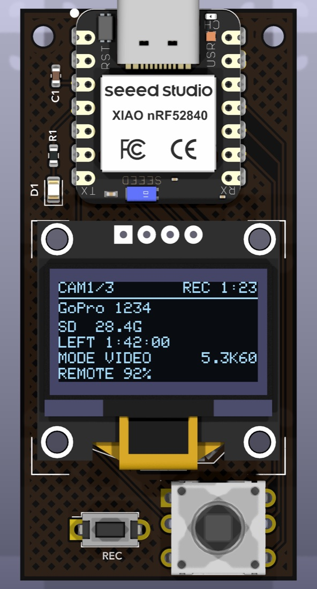
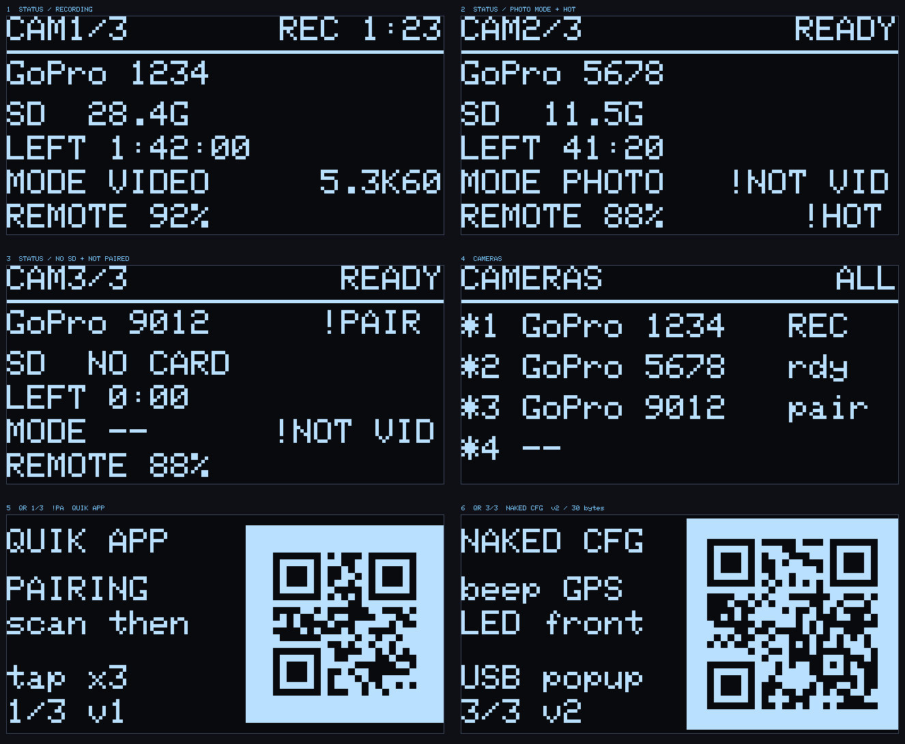
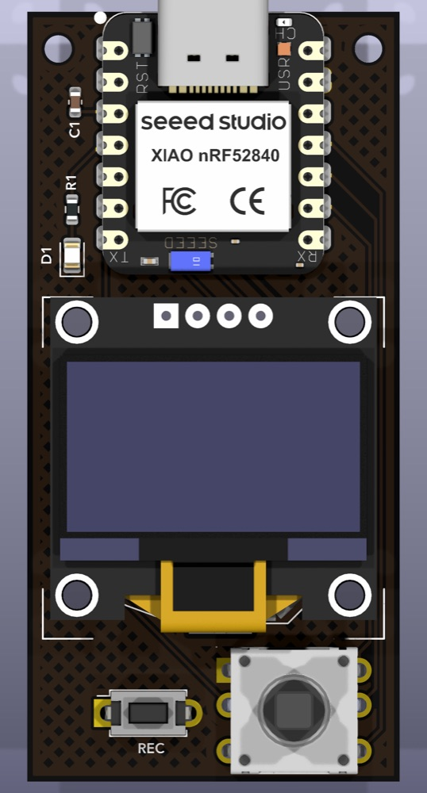
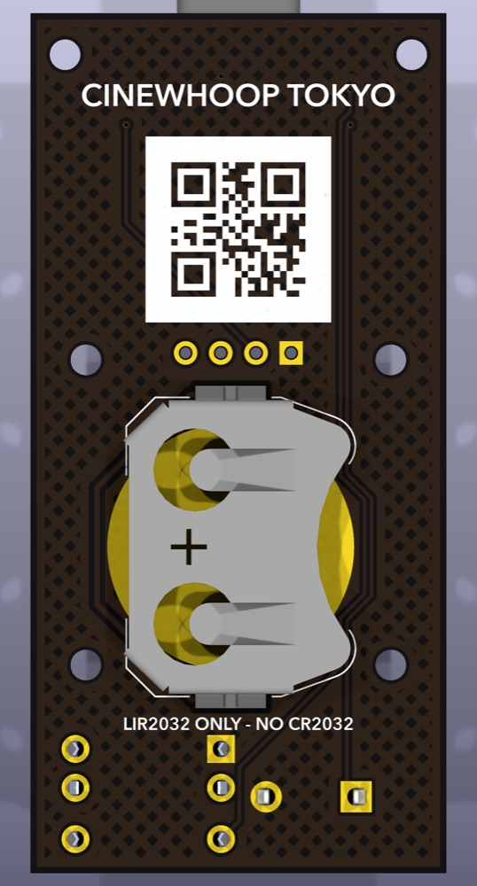

SD が入っていない
カードを抜いたまま積んだ
剥きプロには画面がない。録画が始まったのか、SDが入っているのか、動画モードなのか—— 飛ばす前に確かめる方法が、手元にない。
設計データから起こした暫定の製品画像。有機ELに映っているのは、 実際の描画コードが出力した実ピクセル——絵ではない。

画面も背面液晶も外した GoPro は、LED の点滅しか手がかりがない。 それも機体に載せてしまえば見えない。一本まるごと録れていなかった、という事故は、飛ばし終わってから分かる。
BLE でカメラに繋ぎ、剥きプロでは見えない情報だけを 0.96 インチの有機ELに出す。 録画の開始・停止は独立したタクトスイッチ。手袋のまま、画面を見ずに押せる。
剥きプロを何台も運用していると、どれが録れているか分からなくなる。 最大4台に同時接続し、一覧で状態を見て、選んで、あるいは全台まとめて回す。
画面のない剥きプロをペアリングするには、GoPro Labs の QR をレンズに見せる。 そのQRを、このリモコン自身が表示する。紙も スマホも要らない。

基板の裏にも同じ QR をシルクで刷ってある。リモコンの電池が切れていても、ペアリングだけはできる。


| MCU | Seeed XIAO nRF52840（技適 211-220207 / 内蔵アンテナ） |
| 表示 | 0.96" 128×64 有機EL（SSD1306 / I2C） |
| 操作 | REC 専用ボタン（APEM MJTP1250）＋ 5方向スイッチ（BRIGHT TSX101G100-250） |
| 表示灯 | 赤 LED（タリー）＋ モジュール内蔵 RGB（緑=待機 / 赤=録画 / 黄=警告 / 青=探索） |
| 電源 | LIR2032 のみ（充電式リチウムイオン）。USB-C で充電。CR2032 は不可 |
| 基板 | 30.1 × 62.1mm / 2層 / 1oz / 黒レジスト・白シルク・ENIG |
| 対応 | GoPro HERO9 以降（Open GoPro BLE API） |
| 同時接続 | 最大 4台 |
これは設計データであって、製品ではない。基板は起こしたが発注しておらず、 ファームウェアはコンパイルが通るだけで実機で動かしていない。以下は未確認のまま。
設計ファイルと経緯は手元にある。作って動かしたら、ここを書き換える。